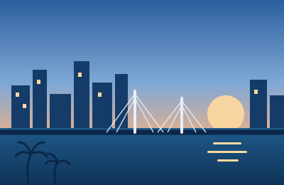

2023–presentMumbai
Powai · home for four years now
The city I did not choose and ended up belonging to. Powai has its own weather, somehow — monsoon arrives over the lake before it reaches anywhere else. Most of what is on the rest of this site was built within about two kilometres of one hostel room.